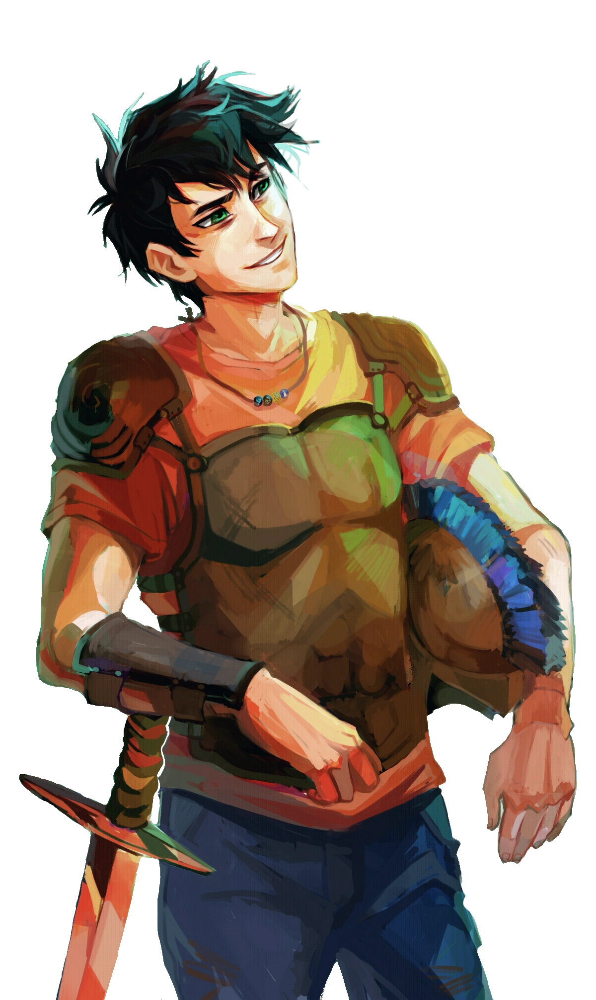
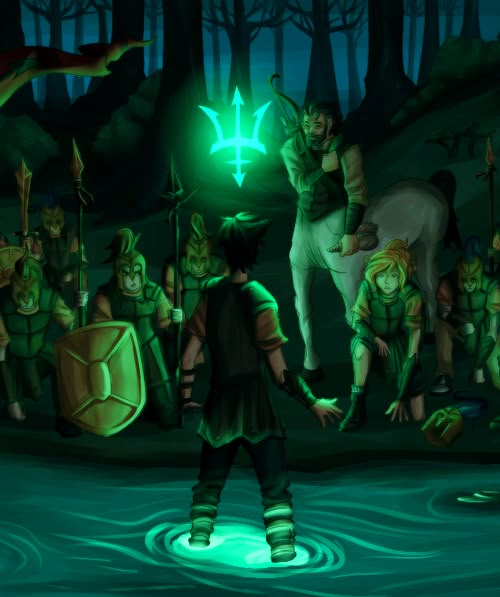

Seja Bem-Vindo ao
Seja Bem-Vindo ao
Sobre o Acampamento Meio-Sangue

Inspirado na obra de Rick Riordan, buscamos nos conectar com o nosso usuário de modo mágico. Através do processo de “Reclmação divina”, guiamos o usuário em uma jornada de autoconhecimento e reflexão sobre suas principais virtudes e valores.
Como Surgiu?
Esse projeto surgiu da sufocante vontade de um garoto de 13 anos de fugir para um mundo fantasioso que o tirá-se de sua realidade por alguns momentos, um lugar onde ele poderia ser o que quiser sem se sentir tão diferente e deslocado o tempo todo. Diante da narrativa cativante e dos personagens cheios de personalidade, foi-se encontrado um conforto que não parecia possível naquele momento. As narrativas únicas sobre cada um dos semideuses despertam reflexões acerca de nós e do mundo a nossa volta.

Essa plataforma oferece um quiz de 15 perguntas que auxiliam os usuários a descobrirem a quais chalés os mesmos pertencem, revelando seu parentesco divino no processo. Ao final, será possível visualizar uma dashboard interativa com informações sobre os demais chalés, revelando conexões e similaridades entre os perfis.
Chalé 1
Deus dos Céus
Chalé 2
Deusa da Família
Chalé 3
Deus dos Mares
Chalé 4
Deusa da Agricultura
Chalé 5
Deus da Guerra
Chalé 6
Deusa da Sabedoria
Chalé 7
Deus do Sol e da Medicina
Chalé 8
Deusa da Lua e da Caça
Chalé 9
Deus do Fogo e da Forja
Chalé 10
Deusa do Amor e da Beleza
Chalé 11
Deus da Festa e do Vinho
Chalé 13
Deus do Submundo